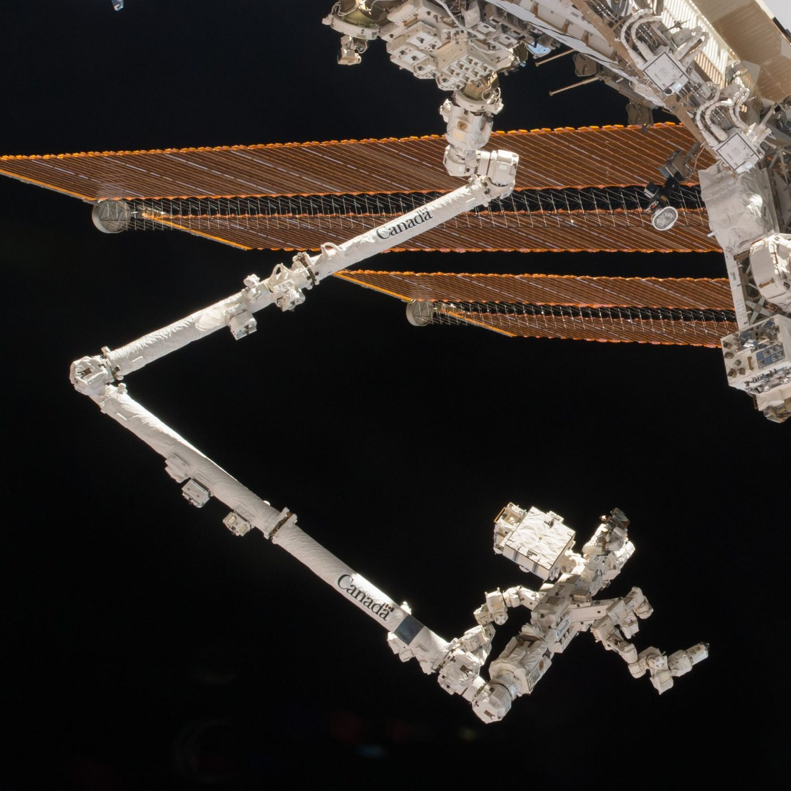
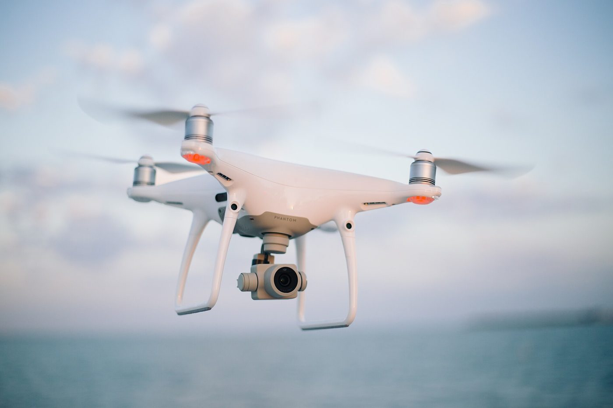

Sampling planners
Throw random darts into the space and connect the ones that work. RRT finds a path in huge spaces fast. RRT* keeps refining it toward the shortest.
Engineering · Robot Autonomy · Planning
Robots have to find their way around rocks, chairs, and people without bumping into anything. Watch four robot “brains” try to reach the flag, then drive a robot by spinning its two wheels.
A* finds the best route on a grid. But a robot arm has six joints, a drone flies in 3D, and a delivery robot shares the sidewalk with people who move. Real robots mix planners: one that finds a way through a huge space, one that reacts in milliseconds, and a model of what the wheels can physically do. Race four of them on the same obstacle course.
← Back to EngineeringExplorer · Story time
Hi, I’m Bolt! I want to roll to my checkered flag, but rocks are in the way. I can find my way in two ways.
1. Plan ahead. I look at a map and draw my whole trip first, like a GPS in a car.
2. Look and turn. I only watch what is right in front of me and steer away from bumps, like you walking down a busy hallway.
The smartest robots do both!
Why A* isn't enough
A* checks every cell it needs to, which is perfect for a 2D floor plan. A robot arm's "map" is every combination of its joint angles — a six-dimensional space. Split each joint into just 100 steps and you get 1006 = a trillion cells. Nobody searches that cell by cell.
Throw random darts into the space and connect the ones that work. RRT finds a path in huge spaces fast. RRT* keeps refining it toward the shortest.
Don't plan the whole trip — just decide the next move from what the sensors see right now. Potential fields and the Dynamic Window Approach work this way.
A global planner (A* or RRT*) draws the route from the map. A local planner (DWA) follows it, dodging the dog that walked in front of the robot a moment ago.
Sim · Planner race
Press a robot brain button. The S is where the robot starts, and the flag is its goal. Tap an empty spot to drop a rock. Tap a rock to take it away. RRT grows a tree of tries like roots looking for water. DWA drives a little robot that looks and turns.
Pick a planner. Drag S or G to move the start or goal. Click empty space to drop an obstacle; click an obstacle to remove it. The faint ring around each obstacle is the robot's radius: the planner keeps the robot's center out of it.
Keyboard: click or Tab into the map, then ←↑→↓ move the crosshair (Shift for bigger steps), Enter adds or removes a rock, S / G move the start / goal there.
Pick RRT and press Restart three times. Does the yellow path look the same each time? Why not?
Pick U-trap and Potential field. The robot gets stuck inside the cup! Tap rocks away to help it escape.
Pick DWA and turn on Obstacles move. Does the robot slow down when rocks come close? Why is that smart?
Run RRT on the slalom three times. Is the path the same each time? Now run RRT* and let it go. How much shorter does the path get?
Load the U-trap and choose Potential field. Where does the robot stop, and why? Turn up the push. Does it help or hurt?
Choose DWA with the random forest and turn on moving obstacles. The red arcs are rejected. Why does it slow down near obstacles? Then turn off the A* route on the slalom. What goes wrong without a global plan?
How each one thinks
Steven LaValle's Rapidly-exploring Random Tree. Random samples land most often in big empty regions, so the tree is pulled outward into unexplored space.
It is probabilistically complete: if a path exists, the chance of finding it approaches 100% as it keeps sampling.
Karaman and Frazzoli added two steps: pick the cheapest nearby parent, and rewire neighbors if going through the new node is cheaper. Given enough samples, the path approaches the shortest possible.
Oussama Khatib's idea: treat the robot like a charged particle. Goal = opposite charge (attracts). Obstacles = same charge (repel). Add the forces and follow them.
Weakness: local minima, spots where forces cancel and the robot freezes short of the goal.
Fox, Burgard and Thrun built it for museum-tour robots. Only consider speeds the motors can reach in the next instant (the "window"), predict each arc, drop any that would hit something, then score the rest on heading, clearance, and speed.
Engineer deep dive
Planners don't search the room; they search C-space, the set of all robot configurations q. A disc robot's C-space is (x, y), and each obstacle grows by the robot's radius. That is the dashed ring in the sim. A 6-joint arm's C-space is 6-D, with obstacles that become strange curved blobs.
RRT* is asymptotically optimal only if the rewiring radius shrinks slowly enough:
r(n) = γ · (log n / n)1/d
With n nodes in d dimensions, each new node checks about log n neighbors, so the work per node stays small. (This sim uses a fixed radius, which is a common shortcut.)
Uatt = ½ k ‖q − qgoal‖²
Urep = ½ η (1/ρ − 1/ρ0)² (ρ < ρ0)
F = −∇(Uatt + Urep)
Gradient descent on U is fast, but nothing stops it settling in a local minimum where ∇U = 0. Navigation functions (Rimon & Koditschek) are fields built to have only one minimum.
G(v, ω) = σ( α·heading + β·clearance + γ·velocity )
Search only (v, ω) inside the window [v ± a·Δt] × [ω ± α̇·Δt], drop pairs where v > √(2 · clearance · a), the stopping-distance limit, and take the arg max.
ẋ = v cos θ, ẏ = v sin θ, θ̇ = ω
ẋ sin θ − ẏ cos θ = 0
The second line says “no sideways velocity.” It limits velocities, not positions: the robot can still reach any (x, y, θ), just not in a straight line. Parallel parking is the proof.
For L = 40 px, vL = 60, vR = 80: compute v, ω, and the turn radius R = v / ω. Then check your answer against the sim's readout and the yellow turning-centre circle.
Sim · Kinematics
Most small robots have two wheels and no steering wheel. To turn, one wheel spins faster than the other. Move the wheel sliders and watch the robot draw a path. The yellow dot shows the spot it circles around.
A plan is useless if the robot can't physically drive it. Most classroom robots (and robot vacuums) use differential drive: two independently powered wheels, no steering. The kinematic model converts wheel speeds into how the whole robot moves:
v = (vR + vL) / 2 · ω = (vR − vL) / L
v is forward speed, ω (omega) is turning speed, and L is the distance between the wheels. It can spin in place, but it can't slide sideways — that is why the DWA above only tries arcs.
Press Pivot. One wheel stops. What shape does the robot draw? Where is the middle of that shape?
Set both wheels almost the same, like 70 and 80. Is the circle big or small? What if they are very different?
Drag both wheels below zero. Which way does the robot go now?
Before pressing Pivot (left wheel stopped), predict: what point does the robot circle around?
Kinematics ignores mass. Dynamics adds it: motors can only change speed so fast. That acceleration limit is what makes DWA's "window" small.
Commanding 60 px/s doesn't guarantee 60 px/s. A PID controller on each wheel reads the encoder and corrects the motor power.
Where you’ll see it
Click any photo to enlarge it.




Robot autonomy series
Quick check
1. A dog runs in front of the robot. What should the robot do?
2. A robot's right wheel spins faster than its left wheel. What happens?
3. Why does a robot want a map?
1. Why use RRT instead of A* for a six-joint robot arm?
2. What is a local minimum in a potential field?
3. In the Dynamic Window Approach, what limits the "window" of speeds?
4. The left wheel runs at −50 and the right at +50. What does the robot do?
5. With L = 40 px, vL = 50 and vR = 90, what is the turn radius?